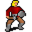

Rothses¶{ .sprite }
| Monster ID | rothses |
| Type | Shopkeeper |
| Class | Humanoid |
| HP | 1 |
| Found in | Remgard |
| Introduced | v0.7.0 or earlier |
Combat stats¶
| Stat | Value |
|---|---|
| HP | 1 |
| Damage | 0 |
| Attack chance | 0 |
| Block chance | 0 |
| Damage resistance | 0 |
| Max AP | 10 |
| Attack cost | 10 AP |
| Attacks per turn | 1 |
| Move cost | 10 AP |
| Critical skill | 0 |
| Critical multiplier | – |
| Crit chance | none (needs critical skill and a multiplier) |
XP formula (from the game's loader): ⌈(attacks per turn × attack chance × average damage × (1 + critical skill × multiplier) × 3 + HP × (1 + block chance) + 9 × damage resistance) × 0.7⌉, +50 if its hits inflict a condition. More Exp adds a percentage on top.
Verified against v0.8.18 monster data and game code (`MonsterTypeParser.java`).
Shop stock¶
| Item | Chance | Qty |
|---|---|---|
| Remgard shield | 100% | 1 |
| Combat helm | 100% | 1 |
| Enhanced combat helmet | 100% | 1 |
| Remgard combat helmet | 100% | 1 |
| Defender's helmet | 100% | 1 |
| Gloves of the guardian | 100% | 1 |
| Combat boots | 100% | 1 |
| Enhanced combat boots | 100% | 1 |
| Remgard boots | 100% | 1 |
| Boots of the guardian | 100% | 1 |
| Lightweight splint mail | 100% | 1 |
| Worn splint mail | 100% | 1 |
| Heavy plated boots | 100% | 1 |
Locations¶
| Map | Region | Up to | Notes |
|---|---|---|---|
| remgard_armour | Remgard | 1 | – |
Quests¶
- Everything in order: stages 64, 70
Dialogue simulator¶
Set up your situation (quest stages, items, kills…), then talk to Rothses. The simulator follows the game's own rules: it takes the same silent checks, offers only the options you'd really see, and applies their effects (quest stages, items handed over, rewards) as you go.
Rules verified against v0.8.18 game code (ConversationController.java) and dialogue data.
Dialogue (35 lines)
What the dialogue says, exactly as in the game files. Lines are listed once; links jump to the line a choice leads to.
rothses (silent check: the first matching branch below is taken)
- branch 1 (if reached stage 45 of What is that stench?) → rothses_c1
- branch 2 → rothses_1
rothses_c1 Rothses: “Our hero enters my shop. I am honored. How may I help you? A new set of boots perhaps, or some new gloves?”
- “Let me see what you have for sale.” → shop opens
- “Jhaeld told me you could help me improve my equipment.” (if reached stage 45 of What is that stench?) → rothses_c2
rothses_1 Rothses: “Hi. How may I help you? A new set of boots perhaps, or some new gloves?”
- “Let me see what you have for sale.” → shop opens
- “Jhaeld sent me to ask you about the people that have gone missing.” (if reached stage 52 of Everything in order) → rothses_3s
- “How is business?” → rothses_2
rothses_c2 Rothses: “Oh yes, I can make modifications to most of our defensive equipment that I sell. Want me to look through your things to see if there's anything I can improve for you?”
- “Sure, go ahead.” → rothses_imp_s0
- “No, I would not want you going through my stuff.” → rothses_c3
- “Maybe some other time.” → rothses_c3
rothses_3s (silent check: the first matching branch below is taken)
- branch 1 (if reached stage 64 of Everything in order) → rothses_19
- branch 2 → rothses_3
rothses_2 Rothses: “It's OK, I guess. Not as good as I would like it to be, now that the gates to the town are closed. But people here still seem to need new pieces of leather every now and then.”
- “Let me see what you have for sale.” → shop opens
- “Jhaeld sent me to ask you about the people that have gone missing.” (if reached stage 52 of Everything in order) → rothses_3s
rothses_imp_s0 Rothses: “Hmm, let me see.”
- Next → rothses_imp_s
rothses_c3 Rothses: “Sure. I would be honored to have you back if you change your mind.”
rothses_19 Rothses: “Look, I told you before.”
- Next → rothses_20
rothses_3 Rothses: “Oh, I don't know much about that. Funny you should ask. [Rothses gives you a suspicious look]”
- “Are you sure? Anything you know or might have seen may be of interest.” → rothses_4
rothses_imp_s (silent check: the first matching branch below is taken)
- branch 1 (if carry 1× Remgard shield) → rothses_imp_shield
- branch 2 (if wearing Remgard shield) → rothses_imp_shield_w
- branch 3 → rothses_imp_s3
rothses_20 Rothses: “Now, if you'll excuse me, I have things to do.”
rothses_4 Rothses: “Well, you would think that I see most of what is going on here, considering my shop is this close to Remgard's connecting entrance bridge.”
- Next → rothses_5
rothses_imp_shield Rothses: “That's a nice looking Remgard shield you have there. For 700 gold, I am able to improve it so that it blocks blows a bit better.”
- “Sure, here is the gold.” (if pay 700 gold; hand over 1× Remgard shield) → rothses_imp_shield_2
- “Maybe later. Do I have anything else that you can improve?” → rothses_imp_s3
rothses_imp_shield_w Rothses: “That's a nice looking Remgard shield you are wearing. Remove it from your hands and I might be able to help you improve it, if you want.”
- “Anything else?” → rothses_imp_s3
rothses_imp_s3 (silent check: the first matching branch below is taken)
- branch 1 (if carry 1× Combat gloves) → rothses_imp_gloves
- branch 2 (if wearing Combat gloves) → rothses_imp_gloves_w
- branch 3 → rothses_imp_s4
rothses_5 Rothses: “However, I don't know anything about it. cough”
- “Is there something you are not telling me?” → rothses_7
- “Did the guards ask you about what you know?” → rothses_6
rothses_imp_shield_2 Rothses: “Here you go. One improved Remgard shield.” — effects: gives Remgard combat shield
- “Do I have anything else that you can improve?” → rothses_imp_s3
rothses_imp_gloves Rothses: “Those are some nice looking combat gloves you have there. For 300 gold, I am able to improve them so that they block blows a bit better.”
- “Sure, here is the gold.” (if pay 300 gold; hand over 1× Combat gloves) → rothses_imp_gloves_2
- “Maybe later. Do I have anything else that you can improve?” → rothses_imp_s4
rothses_imp_gloves_w Rothses: “Those are some nice looking combat gloves you are wearing. Remove them from your hands and I might be able to help you improve them, if you want.”
- “Anything else?” → rothses_imp_s4
rothses_imp_s4 (silent check: the first matching branch below is taken)
- branch 1 (if carry 1× Superior chain mail) → rothses_imp_armour
- branch 2 (if wearing Superior chain mail) → rothses_imp_armour_w
- branch 3 → rothses_imp_s5
rothses_7 Rothses: “I did see Bethir the night before she disappeared. She had some equipment to sell. Nothing out of the ordinary though.”
- Next → rothses_8
rothses_6 Rothses: “Oh yes, they've been around asking everyone. I told them everything I know, already.”
- Next → rothses_7
rothses_imp_gloves_2 Rothses: “Here you go. One pair of improved combat gloves.” — effects: gives Enhanced combat gloves
- “Do I have anything else that you can improve?” → rothses_imp_s4
rothses_imp_armour Rothses: “Now that is one fine looking chain mail you have there! For 3,000 gold, I am able to improve it so that it not only blocks blows better, but also hinders your attacks less.”
- “Sure, here is the gold.” (if pay 3,000 gold; hand over 1× Superior chain mail) → rothses_imp_armour_2
- “Maybe later. Do I have anything else that you can improve?” → rothses_imp_s5
rothses_imp_armour_w Rothses: “Now that is one fine looking chain mail you are wearing. Remove it from your chest and I might be able to help you improve it, if you want.”
- “Anything else?” → rothses_imp_s5
rothses_imp_s5 (silent check: the first matching branch below is taken)
- branch 1 → rothses_imp_n
rothses_8 Rothses: “I did not see where she went after that.”
- Next → rothses_9
rothses_imp_armour_2 Rothses: “Here you go. One improved chain mail.” — effects: gives Remgard chain mail
- “Do I have anything else that you can improve?” → rothses_imp_s5
rothses_imp_n Rothses: “No, you don't seem to have anything that I can improve. Come back later and I might be able to help you.”
rothses_9 Rothses: “Look, I told all this to the guards before. Are you implying anything?”
- “I'll keep my eye on you.” → rothses_jhaeld_s_1
- “Thank you for your cooperation.” → rothses_jhaeld_s_1
rothses_jhaeld_s_1 (silent check: the first matching branch below is taken) — effects: sets stage 64 of Everything in order
- branch 1 (if reached stage 61 of Everything in order) → rothses_jhaeld_s_2
- branch 2 → rothses_20
rothses_jhaeld_s_2 (silent check: the first matching branch below is taken)
- branch 1 (if reached stage 62 of Everything in order) → rothses_jhaeld_s_3
- branch 2 → rothses_20
rothses_jhaeld_s_3 (silent check: the first matching branch below is taken)
- branch 1 (if reached stage 63 of Everything in order) → rothses_jhaeld_s_4
- branch 2 → rothses_20
rothses_jhaeld_s_4 (silent check: the first matching branch below is taken) — effects: sets stage 70 of Everything in order
- branch 1 → rothses_20
Version history¶
| Version | Change |
|---|---|
| v0.7.0 | Present in v0.7.0 (earliest release tracked) |
| v0.7.2 | Dialogue: 10 lines changed · text: “It's ok, I guess. Not as good as I would like it to be, now that the …” → “It's OK, I guess. Not as good as I would like it to be, now that the …” · text: “Oh, I don't know much about that. Funny you should ask. (Rothses give…” → “Oh, I don't know much about that. Funny you should ask. [Rothses give…” |
| v0.8.18 | Dialogue: 1 line changed · text: “Now that is one fine looking chain mail you have there! For 3000 gold…” → “Now that is one fine looking chain mail you have there! For {3000} go…” |
Verified against v0.8.18 and every earlier release back to v0.7.0 (game data compared release by release).
Community notes¶
Written by players, not generated from game data. Observations: what players notice in-game · Lore: the in-world story · Trivia: real-world facts, references, development history · Theory / speculation: unconfirmed ideas; may just be unfinished content
Observations¶
Nothing here yet. Know something? Add it.
Lore¶
Nothing here yet. Know something? Add it.
Trivia¶
Nothing here yet. Know something? Add it.
Theory / speculation¶
Nothing here yet. Know something? Add it.
Technical information
| Monster ID | rothses |
| Spawn group | rothses |
| Loot table | shop_rothses |
| Conversation | rothses |
| Faction | – |
| Movement | – |
| Icon | monsters_ld1:14 |
| Defined in | res/raw/monsterlist_v0611_npcs2.json |
Raw data:
{
"id": "rothses",
"name": "Rothses",
"iconID": "monsters_ld1:14",
"monsterClass": "humanoid",
"spawnGroup": "rothses",
"phraseID": "rothses",
"droplistID": "shop_rothses"
}
Data from v0.8.18